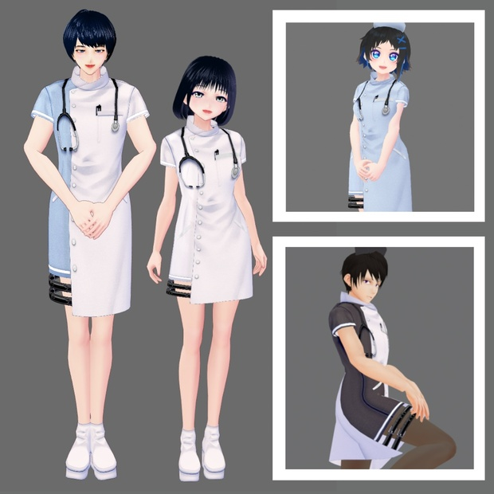
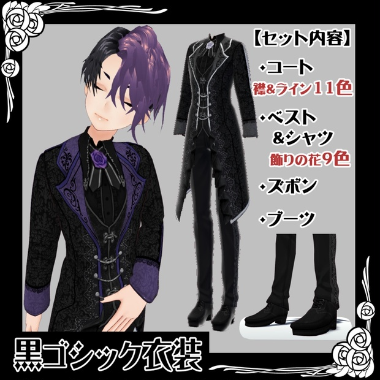
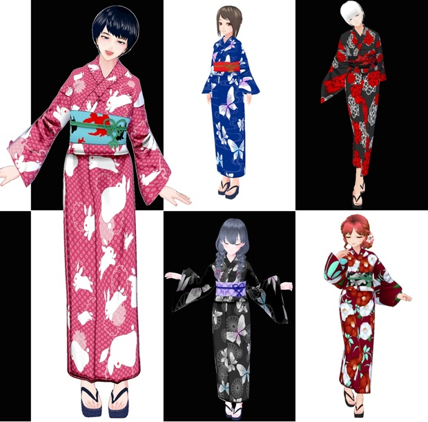
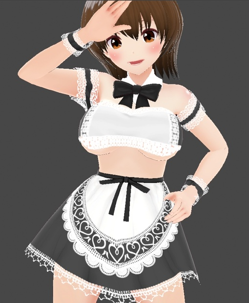
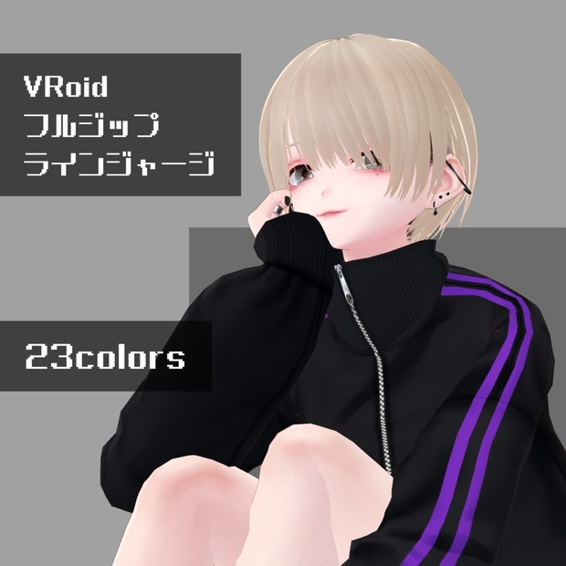
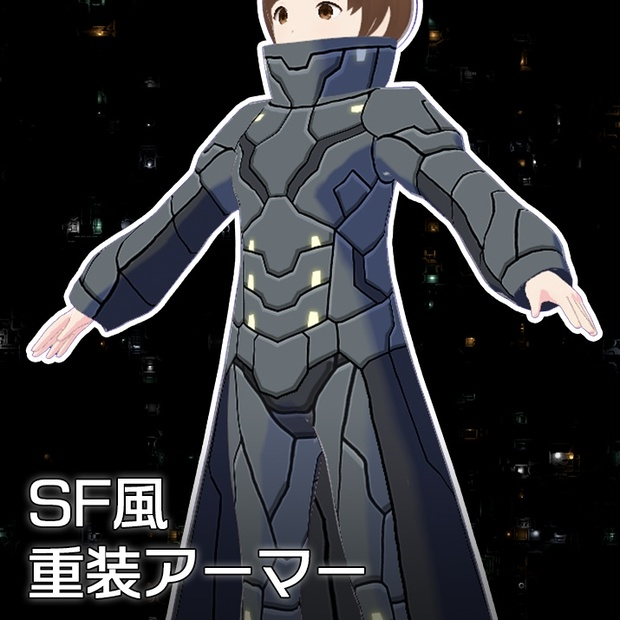
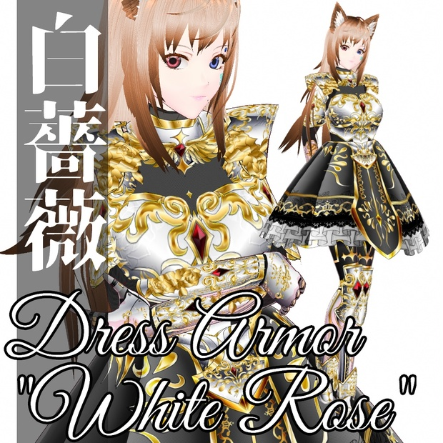
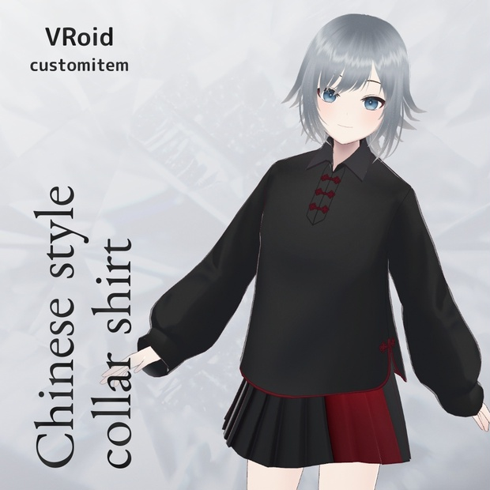

服装
Booth 衣服案例里反复出现的做法
日常街头、制服舞台、和装洛丽塔和中华风、幻想铠甲和赛博，四个方向各打开了 28 个商品页。只留下正文在讲版型、叠层或导入顺序的。下面的做法都有商品页原句。荷叶边、迷彩、针织、蕾丝、金线怎么下笔，这些页面大多没写。滑杆只记页面上出现的词。图是店铺预览，常带别的部件，不能把整张图当成某一层的内容。
先占一张现成模板

这些衣服都不是新网格，是画进 VRoid 已有的衣服。页面把模板名写死了，换一张会歪。
浴衣和着物指定ロングコート(ハイネック)。作者写过去的着物用过ワンピース，这一套改了，不能混。1845302 1747659
旗袍也进ロングコート(ハイネック)。内搭不画在衣服上，进「体型編集→テクスチャ→肌」的新层，文件是 Inner.png。2564526
中华领衬衫做了两套：ワンピース，和ロングコート(シャツ襟)。用来塞进别的外套下面，或当连衣裙里面的衬衫。2329606
带线的球衣给汎用ロングコート(スタンド)，只有上衣。2056523 扎染 T 恤写「使用型紙 ロングコート(ハイネック)」。2980670 夏装长 T 是衣装編集→デザイン→上半身，选ロングコート（ハイネック）。2983578
短摆女仆画在長袖ワンピース上。2478219 事务服的背心、衬衫、丝带、扣子一起进ロングコート(シャツ襟)，裙子进ペンシルスカート。长裙也在铅笔裙这一栏，页面没说换模板。3790072
SF 重装铠写明画在ロングコート（スタンド）、ズボン（折り目なし）、スニーカー上。这三件预设里没有，要从自定义物品加上。3775767
看起来一件，其实是好几层

哥特背心的原句是：和外套同一张テクスチャ再加一层，放在外套层下面。单独穿背心，也套在ロングコート(ハイネック)上。裤子用ズボン(ズボン折り目なし/ロングコート)，页面写皱褶少一点更好看。袜子加到インナー。旧版 VRoid 没有这个栏，就加在身体皮肤层，因为鞋底有一块是透的。3483788
球衣的衣服和拉链是两张图。先导入本体，再在更上面的另一层导入拉链。2056523
中华领衬衫的叠袖：在长袖贴图上再加一层，导入无袖那张，看起来像叠穿。2329606
校园毛衣走自定义文件。开衫不走毛衣，用ロングコート叠穿再导入贴图。徽章拆成单独图层。页面没写谁在上层。3611124
古典长女仆把同一张長袖ワンピース准备了三份：不叠、叠连衣裙、叠围裙。领子另走ロングコート(シャツ襟)。领结和绳状领带分开。袜子走肌着。3907222
法式女仆的裙撑写在连衣裙内部，形状名有ラウンド，极光那套另有ハート。围裙的影子单独一层画在连衣裙上，影子不跟围裙绑死后，连衣裙可以单独穿。围裙分成上下两件，所以有接缝。4640302
洛丽塔裙撑是另一件。正式版垫在ワンピーススカート下面，或叠在下半身インナー上。β 版当成普通连衣裙裙加蕾丝制服裙。3426150 振袖风和风洛丽塔把草履写进靴（スニーカー），足袋画在体型テクスチャ上，不画在鞋上。2592530

浴衣平均用 8 层。清单里能对上的是浴衣下地、满铺纹、散点主纹、贝口结带、带上的追加纹、心形带缔，再加上着物褶皱和带缔阴影。色和纹让穿着的人自己叠。导入顺序看同捆图片，正文没有。1845302
着物的顺序写死了：長襦袢，然后着物本体，帯揚げ，帯本体，帯柄（焼込リニア或標準），最后帯締め。顺序错了，页面写看起来会怪。花纹在裾和襟也连着，作者说本来想按衣片切断，一整周连过去更好看。这不是按访问着把絵羽断开。1747659
长襦袢和腰纽分成两层。另外给一张局部透明的默认皮肤，用来让浴衣和身体不相撞。透明掉哪一块，页面没写。2184920
露出的皮肤和衣服影子分开处理

短摆女仆的露出，靠关掉上半身インナー，不是再画一件衣服。从 VRoid Studio v1.0.0 起，默认肌掩膜会把上身露出处挖空。要在「肌マスク」导入 hada-mask.png，掩膜涂白，透过去掉。动作大时腋下还会透，后来加了 hada-mask2。页面写默认多数时候够用。袖子张开设成 100，其余参数 0，大致等于样张。领饰走首饰栏的リボン，不画进连衣裙。2478219
短卫衣落在身上的额外阴影是另一张 png，贴到体型的皮肤，不画进卫衣。低腰牛仔裤进的是裤子里的制服ベスト（半袖）。页面没写为什么用这张型纸。2379743
皮肤从衣服里穿出来时，去体型编辑的皮肤纹理，用橡皮擦掉露出来的那一块。2983578 敞开的卫衣如果肩到胸口透皮肤，按附带的形把素体皮肤裁掉再贴回去。页面写这只照顾肩到胸口，而且并不完全。1918506
和柄哥特按胸围换上衣贴图，避免领口歪：小到普通用 _M，普通到大用 _L。鞋如果改成靴子，要另加一张消轮廓的遮罩，并且写明得在 Unity 里做。3316530 维多利亚军护的胸前也是这两档。6218075
领和胸会变形，就换一张图

环形拉链会随领口参数变形。页面准备了 3 张差分，并写并不是所有形状都覆盖，细调要自己做。只有 beta 版的纹理分男女。正式版有没有分，这句没说。2056523
不对称护士服的推荐参数写在页面上：全体を膨らませる -20，腰稍微收，裙摆稍微收，襟全体をすぼめる 100 到 200，襟を低くする 70 以上、收到大约下巴下面。胸变小参数为正的身体，以及男性，用「バスト小さめ・男子セット」。标准以上的女胸用另一套。鞋和帽子不附。1976294
事务服写ウエストの絞り(くびれ)大约 50 更好看。扣子会随体型歪，同捆里有扣子贴图，页面没写线缝怎么画。3790072
学兰敞开穿时，男素体内搭用タンクトップ，女素体用ベアトップ。抹胸按女素体把「胸の間を平らにする」设成 100。换男素体要把这一项降到 0。两件只能留一件。8889184
扎染 T 恤写：四肢上有权重，用形态键改衣长会穿模或坏掉，所以短款、无袖各自单独文件，不靠一个滑杆收短。扎染怎么画，页面没写。2980670
战斗服按作者自己的女模做，页面写别的体型不保证。夹克拆成衣身、袖子、卷袖差分。里面的衬衫用ワンピース来叠。名牌和补丁是分开的可改素材。迷彩怎么画，页面没写。3980197
铠甲画在衣服上，发光单独一层

重装铠的付费 PSD 是「レイヤー未統合」。层的名字是基本色、追加色、発光、ディティール，另外还有影和高光。每一层画在铠的哪一块，页面没写。3775767
魔法外套铠用 png 时，在 VRoid 里从下到上是ベーステクスチャ、サブ柄、メイン柄。发光不画死在这三层里，另附 Unity 用的マットキャップ。手套和紧身裤只在样张里，不附。2066405

白蔷薇：主甲在ワンピース，肩甲在ロングコート(ハイネック)，膝和脚踝在ズボン，手臂、腿甲和锁子甲内衣在体型テクスチャ，鞋是厚底ブーツ。穿着顺序是内衣之上先放腿和手臂，再放连衣裙、大衣和裤子。页面写把ワンピース的裙子展开 50 左右，ロングコート的肩パッド开到 100。双层裙会互相干涉，喇叭裙被拿掉。最初的羽毛和板甲对不齐，后来改成蔷薇。高跟鞋贴图会缺一块，能看见内部。镜面和金线怎么画，页面没写。3728277
龙姬的裙子内红外黑，所以裙子叠穿两次：两件ロングコートハイネック，上面是外侧黑色，下面是内侧红色。硬装饰是金蚀刻，软的内衣和裙子贴龙鳞。作者写 VRoid 做不出多少立体，就把刺省略了。银色和铂金不够显眼，改成金色。3908676
骑士铠テスタメント：裙子占 4 件トップス，都是ロングコート(スタンド)；铠占 5 件上半身インナー，都是ボディースーツ。层数不够，连体衣 Bodysuits.png 贴在当前皮肤上面的新层。可以拆掉一部分甲变成轻装。铠男女都能用，内衣是女用。男模要另外穿下半身内搭。5205388
赛博铠ピースメーカー把发光放进单独的 Line_E。用绘画软件时把背景改成黑。发光强度不在这页，作者让去搜「vrm 発光」「VRoid エミッション」。胸甲要往前挺时，把胸的参数调大，并让胸口不要晃。换色是把带 ★ 的部件名和同名文件夹里的文件对调。6459287
影狼除靴子外都设成体型テクスチャ。内衣上再装甲片，只穿内衣也可以。背甲要盖在反应炉上面，其余顺序不限。厚底靴不能只改默认靴的贴图，否则脚会穿出，要新做靴子再换贴图。刀一动就扭曲，被拿掉了。3712729
能拆的装饰单独一层，纸样占用要算进去

可摘的部件在这些页面里都是单独一层或单独文件：球衣拉链、短卫衣的徽章和胸章、夏装的项链和手链、战斗服的名牌和补丁、学兰的两种前襟。背带裤的带子用ロングコート做，摆姿势时皮肤会穿出来。页面把它写成已知限制，没有写补法。5141310
法式女仆背后的蝴蝶结占用了ワンピース的型纸，下蹲会被卷进去。4640302
浴衣要把肩宽收窄，再把外套「全体を膨らませる」打成负值，才会接近柔软的着物。这样做领子会变肥。穿模从肩到肘、躯干、腰到小腿中部，页面写削掉比较稳。数值不在正文里。1845302
这轮没写进做法的
打开了但正文只有贩售条款、颜色名单或文件清单的，没有收成技巧。汉服打开的三页没有袖、襟或花纹的画法。魔法少女打开的两页没有画法。破损、裂痕、磨破，没有一页把画法写在正文里。
很多页把参数放在同捆的 Parameter.png 或使用法里。那些图这次没打开，上面的数字不能当成页面已经写了。